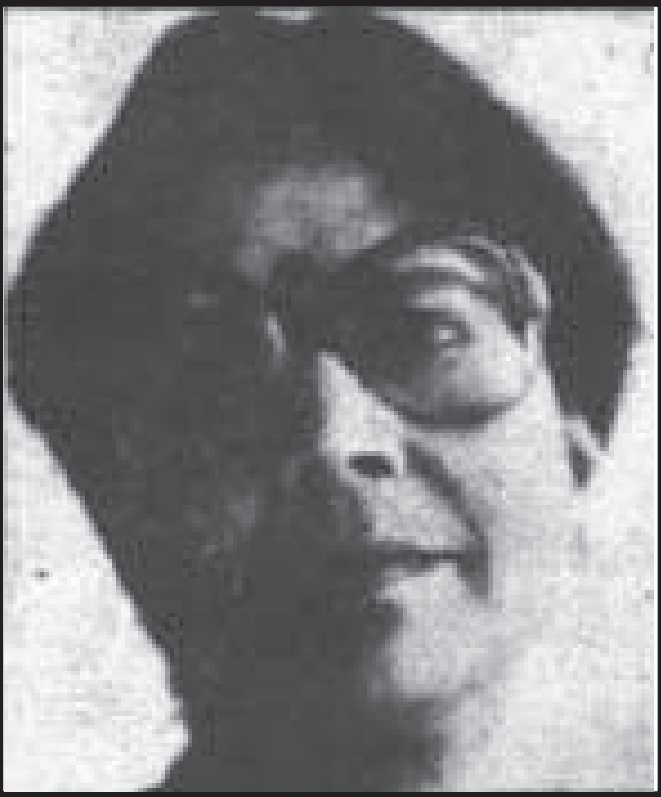

उषा प्रियंवदा का जन्म (24 दिसम्बर 1930) को इलाहाबाद में हुआ। इलाहाबाद विश्व विद्यालय से ही उन्होंने अंग्रेजी में स्नातकोत्तर उपाधि अर्जित की। "कितना बड़ा झूठ ', 'जिन्दगी और गुलाब", 'फिर बसंत आया” उनके कहानी संग्रह हैं। "पचपन ख़ंभे लाल दीवार” तथा 'रुकोगी नहीं राधिका” उनके उपन्यास हैं। भारतीय परिवेश, परंपरा और प्रतीति में भौतिक तुग के वैक्तिक और एकान्तिक सोच और रहन ने जिन विसंगतियों और विडम्बनाओं को जन्म दिया, उनकी गहरी टीस़ को अभिव्यक्ति प्रदान करने में उषा प्रियंवदा सरलतम और सहजतम हैं।वे अंग्रेजी साहित्य में एम.ए. हैं, अंग्रेजी साहित्य का अध्यापन भी उन्होंने किया है। 'आधुनिक अमरीकी साहित्य' पर इंडियाना विश्वविद्यालय से शोध के उपरांत भी उन्होंने हिन्दी से अनुराग बनाए रखा। वे विस्कांसिन विश्वविद्यालय के हिन्दी विभाग में विभागाध्यक्ष रहीं। विदेशी रहवास्न ने उनके स्वदेश चिन्तन को तुलनात्मक बोध प्रदान किया। वे स्वदेश की संस्कृति, परिवार, कुटुम्ब और समाज के लव-ताल में भली प्रकार रमती लगती हैं। आयातित सांस्कृतिक चिन्तन और व्यक्ति के अस्मिता बोध ने मानव मूल्यों की किस तरह अनदेस़ी की है, यह उनकी कथा सृष्टियाँ की निजी पहचान है।
| रचना का नाम | विधा |
|---|---|
| वापसी | कहानी |